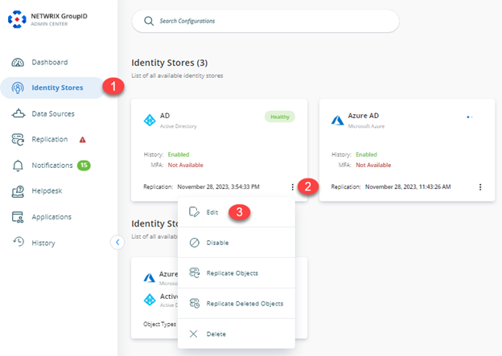
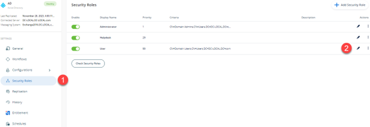
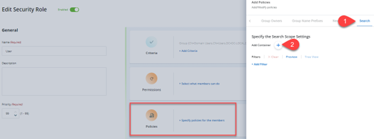
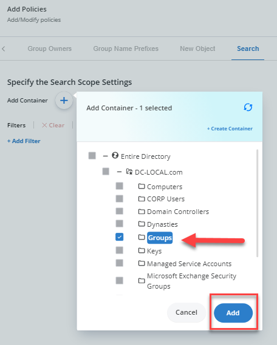
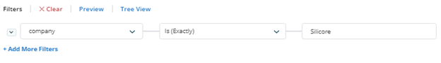
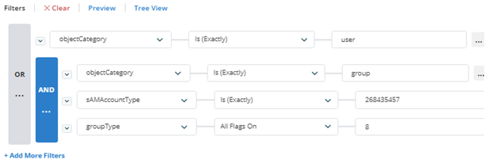
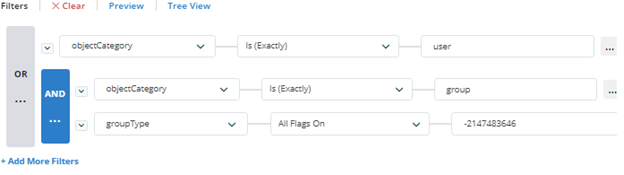
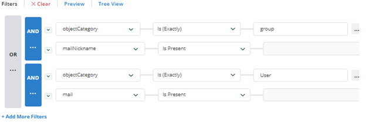

Applies To:
GroupID 11
Business Requirement:
Set GroupID search in such a way that AD objects (e.g., Groups, Users, Contacts) can only be searched within a specific OU and filtered based on Active Directory attributes.
Solution:
This business requirement can be achieved by configuring the Search Policy for security roles in an identity store.
More Information:
Use the Search policy to:
-
Limit the search scope to a particular container for role members.
-
Designate an LDAP criterion that uses AD attributes to add a search filter.
Let's assume you specify a container and set the LDAP filter to (Country=United States*). When a role member performs a search, GroupID looks up the container and displays objects that have the United States as a value for the Country attribute.
Now consider these scenarios:
-
If you only specify a container, a search performed by role members returns all matching objects residing in that container.
-
If you only specify an LDAP filter, a search performed by role members displays only those objects with the Country attribute set to the United States from all containers in the identity store.
By default, or in the absence of this policy, any search performed by role members returns objects from all containers in the identity store.
Apply the Search Policy:
-
In GroupID Admin Center, click the Identity Stores node.
-
On the Identity Stores tab, click on the Triple Dot button, and then click on the Edit button to go to the properties of the required identity store.

-
On the Security Roles tab, select a role to define a search policy for it, and click Edit.

-
On the Role Properties page, click the Policies tab and then click Search in the left pane.

-
Click the Plus button and select a container. A search performed by role members would return objects that reside in this container.

Choose a Search Filter:
When you apply an LDAP filter, a search performed by role members only shows objects that match the specified criterion.
-
In the Filter area on the Search page, click on +Add Filter, and select a schema attribute from the drop-down list (for example, Company).
-
Select an operator from the second drop-down list (for example, Is Exactly).
-
Enter a value concerning the selected schema attribute in the third box.

You can define multiple queries by clicking on the +Add More Filters and using the AND or OR operator to group all rows that make up a query.
A down arrow appears in the applied operator's icon. Click it to display the context menu with the following options:
-
Select Group to select all rows that make up the query.
-
Ungroup to remove the operator and ungroup the rows.
-
Change to change the AND operator to OR and vice versa.
-
Add Clause to add a new row for specifying an additional clause for the query.
-
Delete to delete the query with all its rows.
Some Useful Examples:
-
To limit searches to mail-enabled distribution groups and all users:

-
Limit searches to all global security groups and all users:

-
Limit searches to mail-enabled groups and mail-enabled users:
